资产管理
资产分类
-
【后台】选择左侧资产管理-资产管理，自定义分类中已有常用类型，如需要添加则在添加自定义分类中添加分类信息，填写完成点击添加。
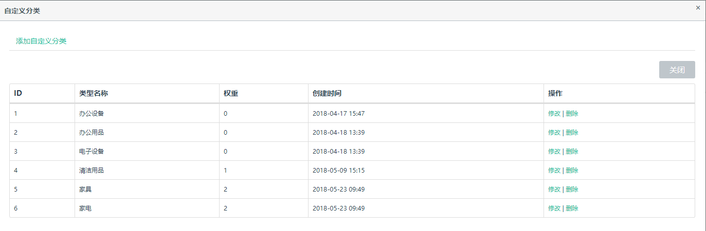
资产添加
-
【后台】选择左侧资产管理-资产管理菜单，添加资产中填写完成点击添加。长期资产需要填写设备相关信息，与消耗品内容有所不同。
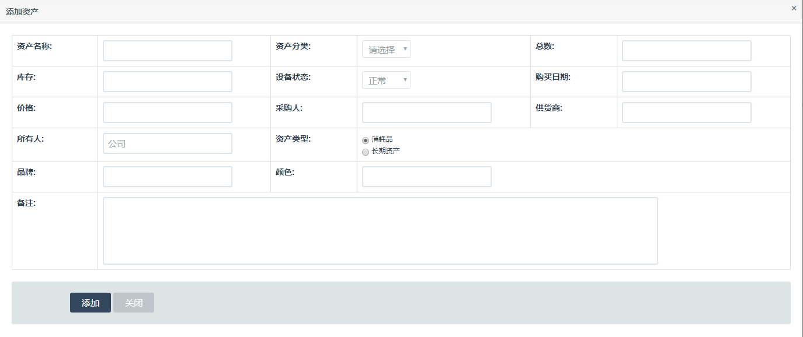
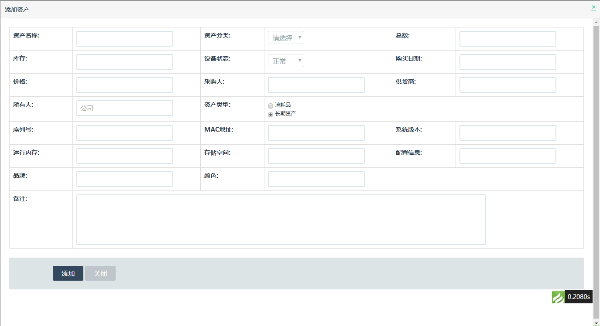
资产申请
-
【移动端】发起-资产申请，选择要申请的资产，填写完成点击申请。消耗品”对应的使用类型为领用不需要归还，长期资产对应的使用类型为借用需要归还。

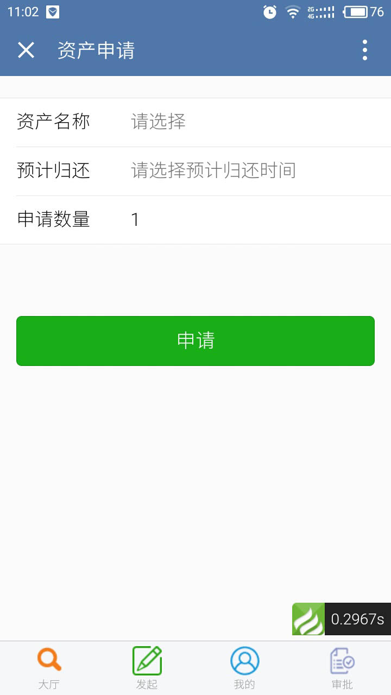
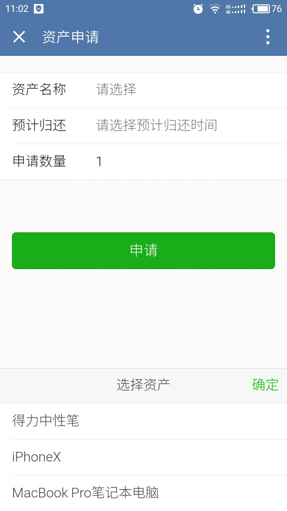
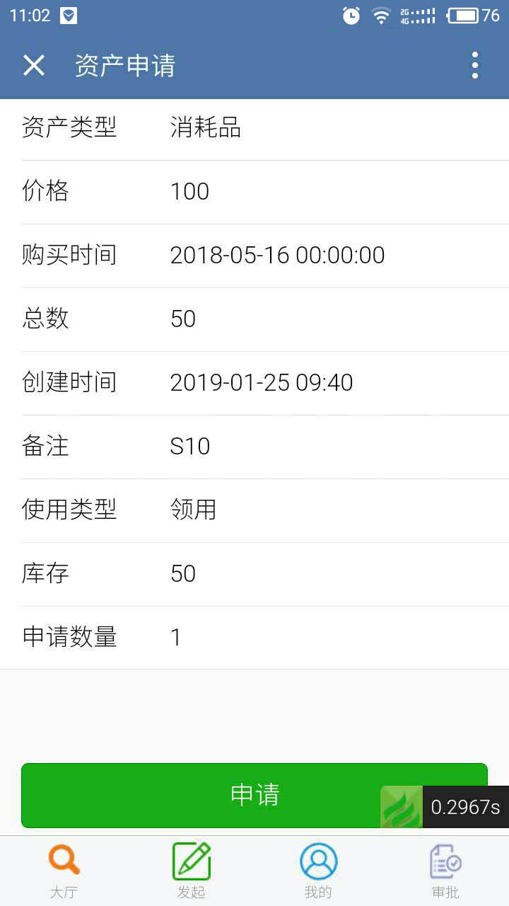
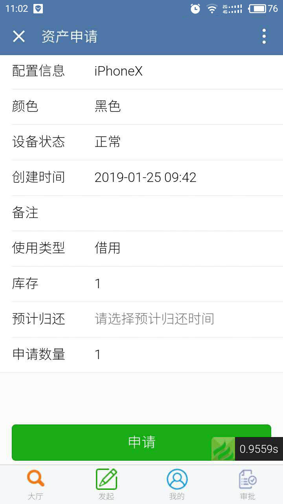
资产领用/借用审批
-
【移动端】员工在移动端提交了资产申请后，管理员会收到系统推送消息。打开详情，并且需同意】【驳回】【转审批】其中一项。同意】【拒绝】并选填批语。
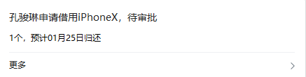
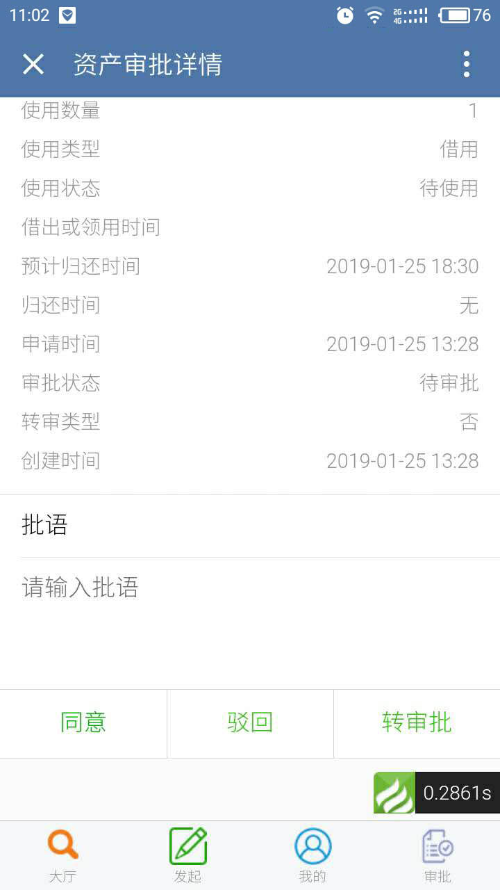
-
【移动端】【转审批】需要选择审批人，点击【转审】，由系统推送消息给新的审批人进行审批。
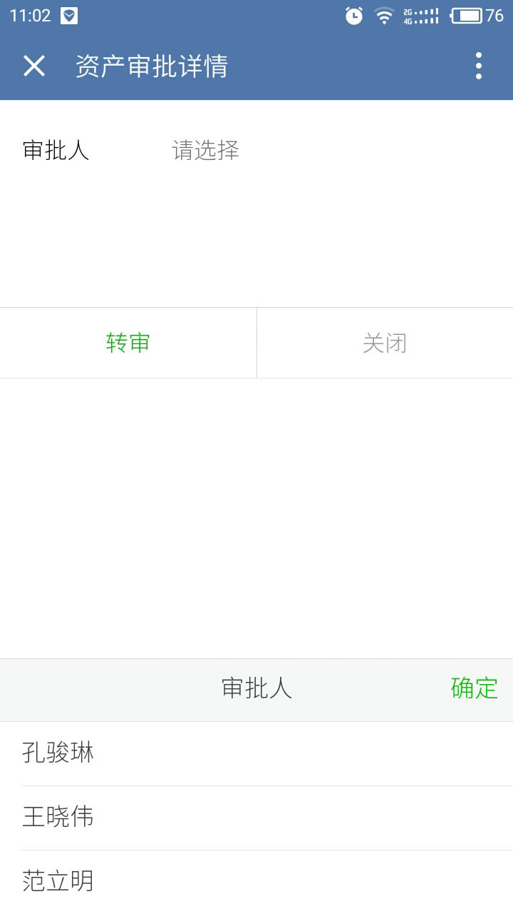
-
【移动端】审批人完成审批后，申请人会收到系统推送消息，以此获知申请是否通过。
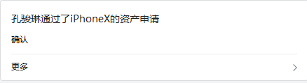
资产归还
-
【移动端】我的-资产记录，进入资产记录列表选择需要归还的资产，进入详情，点击归还。

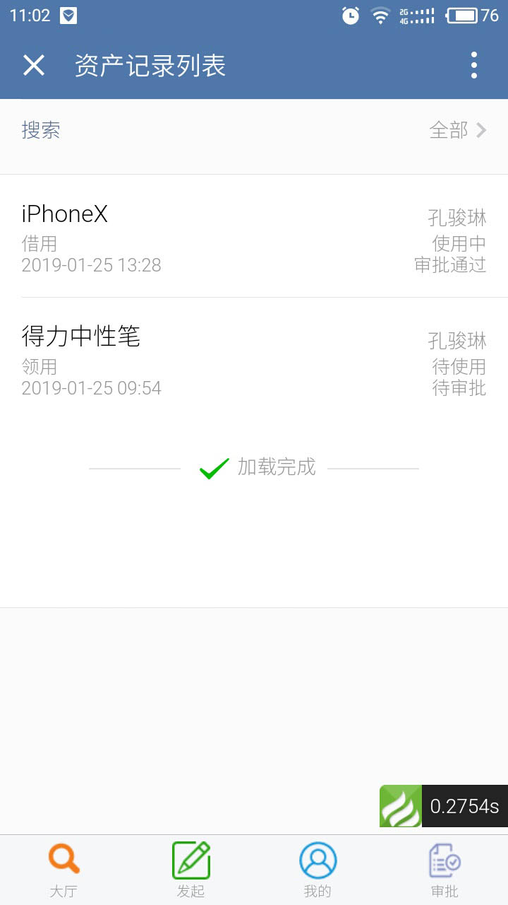

资产归还审批
-
【移动端】员工在移动端提交了归还资产申请后，管理员会收到系统推送消息。打开详情，选填批语，点击确认归还。
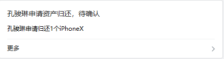
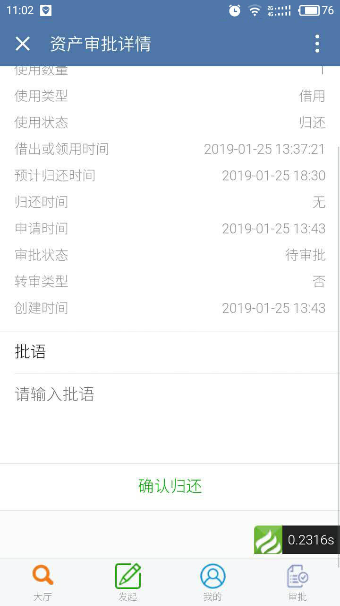
-
【移动端】审批人确认归还后，申请人会收到系统推送消息，以此获知申请是否通过。
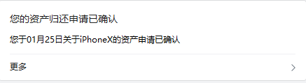
-
【移动端】我的-资产记录，进入资产记录列表选择已通过归还审批的资产，进入详情。在评论记录中输入需要评论的内容，点击评论。

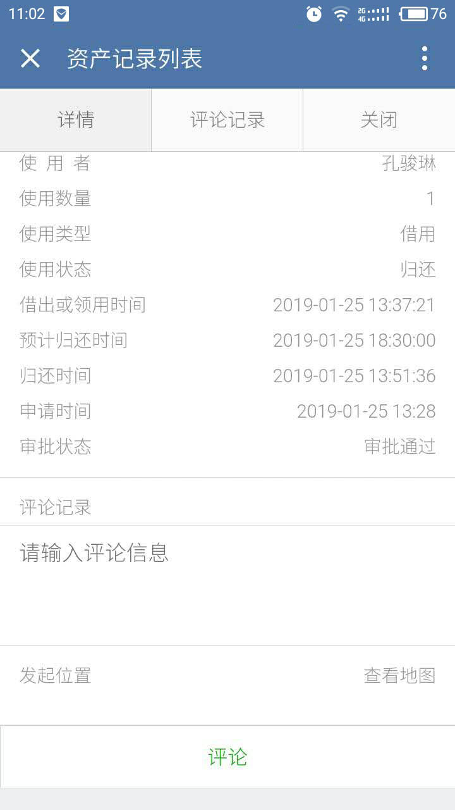
-
【移动端】我的-资产记录，进入资产记录列表选择已通过归还审批的资产，进入评论记录查看该资产的评论记录。
资产记录
-
移动端】我的-资产记录，资产记录列表，查看详情。
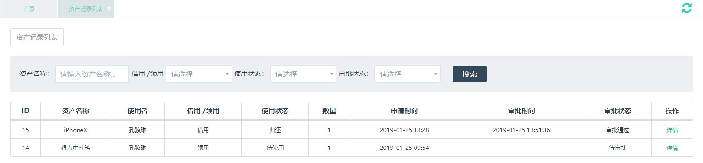
-
【后台】选择左侧资产管理-资产记录列表菜单，选择资产名称、领用/借用状态、使用状态及审批状态进行查询。